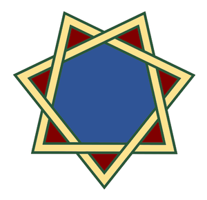

Épitaphe
Le temple du couple hébreu en Shalom Bayit
Rédigé en mai 2023
Mis à jour en septembre 2023
Temps de lecture : 26 minutes
Le Shalom Bayit
Le Shidouk
Le Shidouk (rencontre en vue d'une union) du couple en Shalom Bayit (paix de la maison) par l'association amoureuse évolutive entre un homme et une femme suivit de fiançailles pour un mariage implique la création d'une entité commune.
La racine שדך signifie "appariement, jumelage, mettre en relation, demander en mariage, apaiser".
Cette entité commune immatérielle nommée couple est initialement composée de deux flèches ayant des "atomes crochus" permettant d'envisager une union, qui vont progressivement se compléter en formant deux hexagrammes dont chaque triangle complémentaire provient de l'autre (cf. section suivante), résultat de l'entrelacement des âmes mis au diapason grâce aux sept notes-étapes de la construction du Shalom Bayit afin d'obtenir le mariage en une seule chair devant HaShem pour l'engendrement des enfants :
- Do : une des condition requise en premier lieu est que les participants au Shidouk se plaisent, tant physiquement que mentalement, et on se référera aux ouvrages et coutumes à ce sujet concernant les règles et usages en vigueur selon la culture ou le rite.
- Ré : si les participants se mettent d'accord pour un mariage alors ils s'engagent au sujet de la fidélité et du processus de la construction du Shalom Bayit, et on se référera de même aux lois sur le sujet.
- Mi : le couple ainsi officialisé entre dans une période de formation mutuelle qui peut prendre diverses formes selon qu'il est décidé de se fréquenter ou pas, tel que des sorties, des séminaires ou de l'étude sur le sujet du couple voire également en spiritualité et autres sciences, le but étant d'apprendre ce qu'est l'autre, comment il fonctionne, et quels sont ses besoins, ainsi que de comment les combler et de quelle manière se comporter l'un envers l'autre.
- Fa : une fois cela fait, le couple décide de confirmer l'union, ou de stopper le processus s'il n'y a pas assez d'affinité et si trop de problème sont insolubles (la formation de la personnalité de chacun pour donner naissance à l'entité commune malgré la différence des caractères ayant été un échec).
- Sol : durant cette phase les personnalités mettent à l'épreuve le couple pour mettre au diapason les caractères, c'est-à-dire les habitudes de vie, les comportements sociaux, le mode de communication et les projets personnels ; si la formation a été suffisamment efficace cela se fait facilement et rapidement comme une évidence car les conjoints se compléteront à merveille, ce qui fera émerger un sentiment de complicité et d'inséparabilité, alors à ce stade l'union ne sera plus jamais remise en question quels que soient les problèmes restant ou à venir, à moins d'un incident.
- La : le couple définit son plan de vie, la façon matérielle et pratique de vivre dans un logement et diverses choses comme par exemple en judaïsme où l'homme peut par exemple offrir des bijoux de couple pour la vie ainsi que des vêtements comme à Pessa'h, Shavouh'ot et Soukot où il offrira également des jouets particuliers ou des friandises spéciales aux enfants afin qu'ils se souviennent plus tard que ces célébrations du temps des cycles de la nature et du corps des humains sont, avec le Shabat et la Nidah, des choses importantes.
- Si : le couple grâce aux ouvertures de l'engendrement fabriquent de nouveaux humains dont il faudra prendre soin et instruire pour leur donner des outils afin de vivre dans le monde avec force, bienveillance, motivation et joie, et de cette manière la gamme sera complète pour de nouvelles gammes à venir.

Les Sodot
Le mot סוד signifie "intimité, confidence, secret, science, recommandation, assemblée, délibération".
Le sod de la mariée est d'être amoureuse pour la vie de son mari.
Le sod du mari est d'être amoureux pour la vie de sa femme.
Le sod du couple est de construire un Shalom Bayit pour non pas se fondre l'un dans l'autre et se noyer en perdant son identité, bien au contraire : l'objectif est de superposer au mieux possible les cercles du poster ci-dessus afin que visuellement ils semblent comme un seul mais étant en réalité trois entités distinctes intriquées au point de ne plus faire la différence depuis l'extérieur dont on ne voit que le couple derrière lequel se trouvent à égalité d'égal à égale l'homme et la femme qui se supportent et se soutiennent tel un être distinct mais inséparable, le couple.
Le sod de la Nidah de la Torah qu'HaShem a donné à la femelle mariée du Béréshit Israël, Mikvé inclus, est de rendre le saint des seins plus résistant, de fabriquer des ovules de meilleure qualité, de rendre le coeur plus ravissant, et de rendre le mental plus élégant.
Le sod des Célébrations de la Torah qu'HaShem a donné au mâle adulte du Béréshit Israël, Shabat inclus, est de rendre le corps plus résistant, de fabriquer du sperme de meilleure qualité, d'agrandir le coeur de bonté, et de rendre le mental plus fort :
- Pessa'h : le premier jour on mange de l'agneau rôti et non bouillit, sans os coupé, avec des pains azymes aux herbes amères toute la semaine, pour comprendre que les idéologies et les histoires de Mitsraïm et de Erev Rav ne sont que des sornettes malveillantes (du mauvais 'hamets qui fait mal tourner les choses).
- Shavouh'ot : après le omer de 50 jours depuis le premier jour de Pessa'h, suivit de la diète sans céréales ni aliments du verger jusqu'au lendemain du Shabat avec un confit d'agneau à l'huile (du gras, beurre et crème inclus) et farine avec du vin, puis après encore 50 jours on mange du ragoût d'agneau et de veau recouvert d'une sorte de bière blanche, rigueur et compassion du don de la Torah de HaShem du Elohim d'Israël.
- Yom Terouh'ah, Yom HaKipourim et Soukot : on mange des burgers d'un mélange d'agneau, de veau, et de cerf (ou à défaut de bélier), en proportions variables avec du gras et de la farine, car le mois d'Ethanim (Tishri) procure respectivement un renforcement du corps, de l'âme, et de l'esprit.
Ye'hezqel 4.16 : Il (HaShem) aura dit à moi fils de Adam "Ici Je suis (existe) [avec lui], il (le fils) a considéré (prêter attention, frapper) bâton du pain (nourriture) pour Yiroushalem ; il donnera à manger lui [à elle] du pain lorsque rythme (pulsation periodique, éjaculation) et avec crainte (attention, prudence, sollicitude ) lorsque eau (sperme) [coule] afin que rayon (jet) [ne soit pas gâché] et avec ce qui [est] richesse de lui il donnera à boire".
• Bâton : la racine désigne les choses qui s'étendent, s'étirent, se plient, s'inclinent, se penchent, tanguent et se répand.
• Yiroushalem : la conscience du cerveau, en solitude de la présence de sa femme, car le Youd est manquant pour indiquer que le mari n'est pas encore dans la Jérusalem de sa femme puisqu'ils ne sont pas encore mariés mais seulement en fiançailles du shidouk.
• Richesse : le mot considéré ici est Mem-Mem-Noun additionné d'un Vav et précédé des suffixes Vav et Bet et Shin, sinon ממון peut signifier "argent" soit la richesse de l'homme, celle de la femme étant dans ses ovaires.
Ainsi en SI soit le couple consacre le fluide pour faire des enfants, soit l'homme donne à boire à sa femme pour la fortifier pour les grossesses et puis lors de la ménopause, soit il ne sort pas pour se fortifier et illuminer le couple, comme lors du premier jour de Pessa'h et lors de la semaine de Soukot, ainsi qu'à Shabat où il ne faut même pas faire de feu du tout. Les rabbins enseignent en effet que l'homme marié ne doit pas sortir de son corps en dehors de la matrice de sa femme, car ce serait du gâchis, mais avant le mariage c'est de l'entraînement. Ensuite avec les grossesses elle pourra elle aussi lui donner à boire pour le fortifier.
Quran "Les coutumes [du mental]" 7.11 Littéral : C'est pour cela que nous avions rendu convenables vous1, ensuite nous avons modelé vous2, puis nous avons conseillé pour les rois (premiers-nés devenus influenceurs) "honorez (rendez hommage) pour Adam3 !" ; alors ils ont honoré eux-mêmes {volontairement}, sauf Ibliss4 ne pas il arrive à respecter ceux qui honorent [leurs femmes et la vie (HaShem)].
1. Les scribes et les enseignants de la Torah font cela génération après génération grâce aux textes sur la doctrine de la science sacrée concernant le corps, l'âme et l'esprit de l'homme, de la femme, du couple, de la famille et des groupes humains. Cf verset 10 qui mentionne que par les scribes se transmet le pouvoir d'influence bénéfique de l'autorité de HaShem/Théos/Allah de Elohim, ainsi qu'un mode de vie noble pour exister en paix avec le monde quoi qu'il arrive, non pas avec des rites qui relèvent des cultures, mais avec une vision du monde sur les actions convenables à faire et celles à ne pas faire.
2. Si le don de la Torah est pour rendre convenable la personnalité innée, l'étude permet le modelage du caractère acquis, non pas comme on taillerait avec brutalité comme font les méchants pour torturer et détruire afin de causer du mal, mais en façonnant avec précaution et bienveillance pour révéler le bien.
3. En faisant des enfants aux femmes, le verbe ayant aussi le sens de "enfler ou faire enfler" ainsi que de "se mettre au service de" la mariée et donc de HaShem afin de propager la Torah en augmentant l'espèce pour réduire le mal et empêcher son extinction, en plus d'augmenter la joie dans le couple.
4. Celui qui est méchant, ce mot désigne l'esprit mauvais primordial, le satan, c'est-à-dire la personnalité incapable d'empathie, de bon oeil et de compassion, et qui est nommée de nos jour psychopathie et sociopathie ou perversité ; sans capacité à aimer, ces gens ne peuvent pas comprendre ceux qui honorent.
Quran "Production de Juifs" 11.7 Littéral : Parce que Lui (Allah/Théos/HaShem) [est] celui qui fabrique {via les bases azotées des ADN} les cieux {états de conscience mentale} et la terre {les cellules, tissus, organes et corps} en six jours {embryologie initiale pour accrochage à l'endomètre} et Il est constructeur de Lui {duplication ADN par mitose et méiose}, souverain de l'eau* selon ce qu'Il lit de vous {transcription épigénétique} en fonction de vous {ce que vous êtes et faites de vous au jour le jour} ; perfectionnement [de l'ADN via l'étude], production pendant que tu exprimes toi {la transcription produit le corps et la conscience} ; vous serez délivrés de isolement de l'agonie [causée par les méchants] selon ce qu'Il exprimera avec autorité ; qu'ils (étudiants) pardonnent à eux ; en effet cela [est] vraiment merveille flagrante.
* Cytoplasme : ADN noyau => ARN => Protéines => cellules => tissus => organes => corps => flux visibles et invisibles.
|  |
{kind=link}
{kind=link}
La présence divine
Le pyramidion de la civilisation
Les pyramides d'Égypte étaient généralement recouvertes en haut d'un pyramidion mais ceux en or ont été volés au fil du temps, ceux en pierre ont été soit détruits soit mis dans des musés.
Celui de la Pyramide d'Amenemhat III est en granite, une roche volcanique riche en quartz très solide. On trouve parmi les inscription deux shenous notables : un à gauche pour le nom civil de naissance du pharaon et un à droite pour son nom de roi.

- Shenou de gauche : un lion, une bulle d'eau, une chouette, peut-être papyrus, une vague d'eau et un roseau soit "la force du coeur azuré de la compassion et la connaissance des mesures et de la géométrie des forces-vecteurs des lois de l'univers et de la vie entraîne la dissipation de l'ignorance sur l'invisible et les tours de passe-passe des humains grâce au livre et à la transmission de la vibration en mouvement du verbe du code génétique".
- Shenou de droite : un disque solaire, une vague d'eau, une faucille avec burin, une avant-bras, une bulle d'eau soit "le début d'un nouvel éon pour répandre la connaissance et bâtir une civilisation [meilleure] {sans crime, via livres des scribes}, cela étant destinée légitime [par l'autorité de la Torah] de la vie (survie)".
Remarque : Le glyphe U5 dit "vérité [forte]" est une combinaison de U1 une "faucille" resserré ici et de Aa11 dont personne à priori ne connait le sens du trait horizontal biseauté à gauche, mais cela ressemble fortement à un burin ; on peut ainsi considérer la faucille et le burin comme l'association de l'agriculture et de la maçonnerie, ce qui est le fondement requis pour bâtir les civilisations humaines grâce aux murs et à la nourriture.
On peut alors comprendre que ces deux cartouches désignent l'effet de la Torah sur le monde via l'étude et la production tel que montré dans une animation YouTube sur la migration des peuples et des hébreux (dont l'auteur n'a pas retrouvé la référence), tel qu'écrit en Quran 21.11 et tel que l'expose le Rav Itshak Ginsburgh ainsi que toute la Torah et les anciens grands textes d'explication dans toutes langues.
Ce rabbin explique notamment que diverses grandes étapes dans l'étude de la Torah au cours des âges correspondent à la mise par écrit de la tradition orale accumulée à un instant donné : il nomme cela "compromettre la Torah pour plus de réponses (traduction automatique)".
La Torah écrite est depuis l'éternité transmise via un Séfer fabriqué avec des feuilles de parchemins de peau provenant d'un animal cachère, mais non d'un poisson, ni même de végétaux, préparées pour cet unique usage, qui sont cousues ensemble avec des fils de nerfs pour former un long rouleau. On utilise une encre noire non effaçable qui autrefois était obtenue en faisant bouillir des huiles végétales, du goudron et de la cire dont on récoltait la suie qui s'en élevait pour l'ajouter à une mixture de sève d'arbre et de miel qu'on laissait sécher pour ensuite le dilué avec du jus de galle de chêne. Même de nos jours, plus de six à douze mois sont nécessaire pour sa confection.
On peut en effet constater une correspondance historique entre l'évolution des technologies d'imprimerie et l'évolution des publications de la tradition orale hors Tanak :
- Xylographie VIIe : Talmud puis Quran à un siècle d'intervalle ;
- Typographie XIe : Rachi puis Choul'han 'Aroukh à cinq siècles d'intervalle ;
- Lithographie XVIIIe : Tanya et diversification des écrits ;
- Offset XXe : boom de livres de commentaires sur la parashah ;
- Internet XXIe : afflux de cours de rabbins avec forums questions et réponses.
D'ailleurs les rabbins estiment parfois qu'internet "a été inventé pour diffuser la Torah", malgré les risques et les dérives.
On peut également considérer que la publication à la demande est en soit une révolution en matière de diffusion car offrant à tout le monde la possibilité de publier sans être dépendant d'un éditeur et de ses décisions.
Les hexagrammes mâle et femelle
Considérant une pyramide à base carrée munie de quatre faces triangulaires, on peut, pour exercice intellectuel et géométrique, inscrire sur chacune les lettres de HaShem, et sur la base le HaShem en tant qu'unicité des bases azotées des instances ADN du HaShem de Elohim.
Ainsi nous pouvons déployer cette forme 3D pour obtenir une forme 2D et ensuite faire glisser les triangles opposés les uns vers les autres pour les superposer.
En supposant que chaque hexagramme est composé d'un triangle mâle pour l'un et femelle pour l'autre, l'autre triangle qui complète la forme provient respectivement de l'union du mari avec sa femme et de l'union de la mariée avec son homme, ce que les rabbins nomment compléter les demi-Torah pour une Torah complète tel que décrit par le Séfer Mishléi 31.
Ainsi l'homme Youd est unit à la femme Vav grâce à la femme Hé unie à l'homme Hé : le Youd de l'homme étant l'impulsion de flamme unie à la communication de la lumière Vav de la femme via la transmission du souffle Hé de la femme au mouvement de la respiration Hé de l'homme.
C'est ce qui se nomme faire résider la présence divine : HaShem est au centre du couple en tant que principe fondamental de cohésion.
Les points et la croix seront étudiés plus loin.

Les copilotes du projet
Un homme et une femme ne doivent pas être un rêve l'un pour l'autre, car un couple durable et harmonieux se forme idéalement selon les lois du Shidouk qui sont en simplifié : présenter un garçon et une fille selon certains critères tels que des affinités et des goûts ainsi qu'une vision de la vie et une direction commune, et s'ils se plaisent alors c'est l'étude et le travail qui permet de construire le foyer sans ni dominant ni dominé (à moins de vouloir d'un commun accord un tel déséquilibre en l'acceptant pour ce qu'il est mais cela concerne en général peu de couples conscients de cela et c'est l'inconscience et l'imposé qui est source de difficultés et de problèmes).
Ainsi le rêve est uniquement d'espérer et de tout faire pour un monde meilleur de paix pour tout le monde avec les criminels en prison pour être réformés dans la mesure du possible.
C'est ce que Aboulafia nomme "Le divorce des noms" et "Le livre du signe" où il explique : que les signes et les coïncidences historiques et chronologiques, au-delà des lois physiques des astres, des atomes et des corps inertes comme vivants, proviennent seulement et uniquement des humains et en général des méchants ; et que les noms des divinités sont des concepts de lois scientifiques pour désigner des groupes ou matrices d'équations de vecteurs de force, moquées et utilisés par les méchants pour mentir et duper les ignorants et les victimes.
En effet, les lois qui sont Dieu ça-même n'ont aucune volonté propre, tel que, selon les dictionnaires et la tradition sacrée, cela est écrit dans les textes originaux de la Torah, de l'Évangile, du Quran, des Sutras, et des vieux textes runiques, ainsi que des fresques de l'Égypte antique ou même des Mayas et autres.

L'octogramme du diamant
Traçant des lignes depuis les arêtes de l'octogone central vers l'hypoténuse des triangles rectangles externes formés par les intersections entre les hexagrammes, nous obtenons une étoile à huit branches et huit vals soit la valeur du calcul hexadécimal de l'astrolabe...
Alors ce qui a été évoqué au chapitre de la Rosa Cosmica pourra être compris en réalisant que la femme hébreu est le diamant du couple qu'ils construisent ensemble pour que l'homme, hébreu ou non hébreu, devienne lui aussi diamant égal de l'égale.
Sachant que l'homme et la femme ne taillent pas ce diamant, contrairement à ce que font les méchants qui blessent et calomnient pour voler et tuer, ils le polissent avec douceur, tendresse, précaution et amour.
Ainsi l'homme pentagramme incomplet devenu hexagramme via les fiançailles du Shidouk en Shalom Bayit pour le mariage s'ancre sur les intersections externes du couple, tandis que la femme de même s'ancre sur les intersections internes ; en vertu de la différence de nature mâle et femelle qui produit ainsi un couple neutre pour former un transistor spirituel et engendrer une seule chair.
 |
 |
 |
 |
Remarque : plus encore qu'avec l'hébreu, le lecteur pardonnera l'auteur pour les erreurs dans ses tentatives de décodage des versets arabes.
- Quran "Le civilisé (ou le constructeur)" 3.48 Littéral : Parce que Il (Allah) fera connaître Lui {via étude} les livres et la sagesse (discernement) et la Torah et le Euangélion.
- Quran "Le civilisé (ou le constructeur)" 3.49 Littéral : Et (Allah sera) instructeur pour renforcer Israël jusqu'à obtenir égalité [dans les couples] [car] Je (esprit de Zacharie, celui qui ramène les fils des juifs perdus qui se sont éloignés de la Torah à travers les générations) ai produit vous (les maris en Shalom Bayit à la suite du Shidouk Torah pour former des couples à égalité de l'égal de l'égale) avec soin (précaution) à cause de éducateur (rabbin, imam, prêtre etc.) à vous. [Cela] obtenu tu (marié) produiras (engendrer) pour vous (couple) à partir de la terre humide (vagin), lorsque il y a la sublimation (oiseau invisible, ce qui fait voler dans les airs, rush d'hormones1) alors tu souffleras pour exploser (shaa puis éjaculation) en dedans afin qu'il puisse exister un enfant du ciel parce que capacité (permis, autorisé) de Allahi {le Lah à toi (ton instance de Allah Théos ADoNaï HaShem YHVH de Elohim) qui étudie la Torah dans toutes les langues sacrées}. Et je plaide en faveur de l'ignorant [tenu en esclavage] et de l'infecté2 [par les méchants]. Et tu donneras la vie à les choses mourantes {spermatozoïdes, en fécondant ovules} avec le pouvoir (permission) de Allahi. Et Je vous informe de ce que vous consommez (le 'hamets et la matsah) {variante: de ce qui vous ronge {les germes comme les mauvais enseignements}) et de ce que vous stockez dans vos maisons (corps de cellules à ADN) {mémoire qui conditionne vos comportements}. Cela {couples} pour ceci {engendrer} à cause de compassion pour vous [arrive] si vous avez été confiants [en la Torah de HaShem et l'Évangile et le Quran].
1. Le rush d'hormones au cours de l'acte et les effets de la respiration shaa sont deux choses distinctes et indépendantes : l'un résulte du frottement par les ouvertures engendrement, et l'autre du mouvement des poumons de manière alterné et périodique sans pause. Le Quran demande ainsi de mixer ces deux phénomènes en duo homme-femme. En effet, si l'ovule de la femme est imprégné de la vibration de shaa, et de même le sperme de l'homme, alors la fécondation est vibrante du souffle de Elohim et on obtient un ou une hébreu de naissance. Il faut ainsi circoncire le mâle à huit jours alors que ce n'est pas nécessaire pour la femelle, sinon il perd inéluctablement et progressivement sa vibration et son hébraïcité, ainsi que sa descendance, et alors faudra circoncire son coeur. Car si la chair est circoncise à huit jours alors c'est HaShem qui se charge de circoncire le coeur du mâle, sinon c'est le peuple qui doit faire cela, pour que, dans son propre intérêt de paix et de joie ainsi que de santé, la chair se "plie" à la Torah. Dans les deux cas, l'étude de la Torah, voire des textes explicatifs dans les langues dites sacrées comme l'Évangile, le Quran et les Sutras, est nécessaire pour le mâle afin de comprendre lui-même et sa femelle.
2. La "lèpre" dont parle Torah, le Quran et consorts, est une plaie infectée causée par les méchants ou qui a été mal soignée par les méchants. Cette lèpre déstabilise l'harmonie du corps et de l'esprit, et transforme l'esprit en corps via le processus de mortification, la maladie.
- Quran "Les bénédictions" 6.11 Littéral : Insignifiants (sans valeur) [sont les méchants moqueurs], vous travaillez vous-mêmes sur la terre [pour améliorer le corps], ensuite vous considérez plaisir (volonté) {légitime}, il constitue entrave (obstacle) à ceux qui mentent.
- Quran "La réparation (Téshouvah)" 9.9 Littéral : Ils (méchants usurpateurs dupeurs voleurs trucideurs) font commerce1 avec les sornettes2, au sujet de Allahi (ton Lah en toi)3, d'une valeur dérisoire (inutile)4, ainsi donc ils détournent eux [destinées des victimes] en privant (éloigner) du chemin de Lui (Allah), ils sont vraiment nuisibles (méchants, mauvais, ignobles, hideux, vicieux), tant qu'ils (méchants) produisent [alors] ils manipulent eux (victimes).
1. De la confusion et des mauvais conseils, cf sourate 2 verset 16.
2. Sottises, fadaises, élucubrations, mythes... sectaires, en falsifiant notamment les versets sacrés de la Torah, Évangile, Quran, Sutras...
3. ADN instance du HaShem/Allah/Théos.
4. Le bénéfice des victimes est nul et pire car escroquerie criminelle voire mortelle).
- Quran "L'arrêt [du mal] OU Les insensibles (Les [coeurs de] pierres)" 15.11 Littéral : Et ne pas Il (Quran) conviendra pour eux (les méchants) mais pour indiquer véritablement [que] ils entraînent [la destruction] eux [et pas nous] lorsque ils se moquent eux [et pas nous]1.
1. Les méchants en se moquant des lois, de leurs victimes et des bienveillants, causent avec leurs crimes des victimes ruinées qui souffrent, ce qui augmente la dette publique et le désordre, puis la chute des nations.
- Quran "L'arrêt [du mal] OU Les insensibles (Les [coeurs de] pierres)" 15.13 Littéral : Ne pas ils {les méchants} ont fait confiance (avoir la emounah1) à Lui (ça) {Allah/Théos/HaShem/YHVH/ADoNaï}. Tu guideras. Elle a libéré [des méchants] de coutume (méthode, rite, procédé) [malveillant, criminel] des prédécesseurs2 {ceux qui agissaient avant elle, la Torah}.
1. En la Torah hébraïque, les sutras sanskrit, l'évangile grec et le Quran arabe, pour procurer du bien et de la prospérité en réduisant le mal et la souffrance.
2. أَوَّلِينَ peut également vouloir dire "elles ont confié [elle] à [toi]" mais le mot a le préfixe d'article défini pluriel.
- Quran "L'arrêt [du mal] OU Les insensibles (Les [coeurs de] pierres)" 15.98 Littéral : Malgré cela {la grande et la petite calomnie du sacré et de ton couple}, imprègne-toi (immersion {dans le flot de l'enseignement sacré}) via ce qui dit du bien (louable) de femme chef à toi {parce toi chef d'elle}, et sois celui qui la salut (rendre hommage, honorer).
- Quran "Le don" 16.01 Littéral : Il donné conseil (directives, lois) AlLahi {avec la Torah}, alors ne pas vous brusquerez (presser, hâter, accélérer, précipiter) vous-mêmes lui {l'étudiant en conversion, car lui seul peut aller à sa propre vitesse}, elles (les partisanes de la partisane du partisan) ont glorifié Lui (HaShem/Théos de Elohim) afin que il soit amélioré (élever, soulever, hisser) [pour] rejoindre [ceux qui] ils contribuent eux-mêmes [à répandre la Torah éons après éons].
- Quran Sourate "La validation" 17.32 Littéral : Et ne pas vous rechercherez (côtoyer, permettre) l'adultère1 qui est grave2 (atrocité, immoral) et il est mauvaise (dommageable, nuisible) conduite3 (chemin, voie, route, comportement).
1. Tromper un conjoint en le tenant dans l'ignorance, les relations partagées d'un commun accord selon des règles établies ne sont pas de l'adultère mais de la polygamie.
2. Toute duperie découverte devient trahison révélée et cause de la peine.
3. Il ne faut pas fréquenter ceux et celles qui font ça.
- Quran "La validation" 17.88 Littéral : Réduit [le mal] selon Moi (Allah de la Torah) ! [Car] elle (ta femme) a associé la joie (sympa, aimable, confiance) et les couvertures {les vêtements invisibles} malgré que ils (méchants) ruinent (trucident) eux (les maris) avec idéologie [nuisible] parce que de le Quran ne pas ils proviennent eux (les méchants), à cause de idéal [de compassion] de Lui {expliquant la Torah} ; et si il arrive [au couple] d'être séparé (kidnappé) par eux à cause de séparation (distance avant mariage), dévoilement [de leurs crimes] {via le témoignage} !
- Quran "Le bienveillant" 40.16 Littéral : Il (Allah) dirige1 eux (les maris {vers leurs femmes}) montrant à eux [la vérité], ne pas Il cache grandeur du Allahi de eux, Il a voulu [libération Pessa'h] à cause de relation de le couple de les cycles (Shabat et Nidah) pour Allahi, le seul vainqueur [contre le mal des méchants].
1. L'étude de la Torah, de l'Évangile, du Quran, des Sutras et des sciences guident, via la Doctrine de HaShem aka Théos aka Allah, les maris vers leurs femmes, l'étude et rien d'autre, tel qu'écrit dans les textes et dit dans les cours et montré par le peuple. Les cycles de l'homme en Shabat et de la femme en Nidah sont pour faire grandir le Lah en l'homme et la femme.
- Quran "Production de Juifs" 11 .10 Littéral : Et lorsqu'enfin nous (les scribes) lui1 (victime des méchants) faisons faire l'expérience du bonheur2 après qu'un malheur3 ait atteint (toucher, frapper) lui, il pensera (sera d'avis) "enlevés4 les méfaits (atrocités) contre moi" ; alors il existera heureux de dignité.
1. L'homme, et donc aussi la femme, car étant réunis à la suite de la validation du Shidouk et de la construction du Shalom Bayit i.e. ayant procédé au mariage en réunissant les corps éloignés pour la formation et le témoignage.
2. Le mot a le sens de bien-être en paix et joie de vivre.
3. Le mot a le sens de désavantage, dommage, lésion, méfait, préjudice, méchanceté
4. Le mot a le sens d'éloigner, partir, terminer, dissiper.
- Quran "Production de Juifs" 11.22 Littéral : Nul doute qu'eux (méchants) à la fin (lorsque victimes délivrées) sont les battus (perdants, terrassés).
- Quran "L'enveloppante" 88.17 Littéral : Mais ne pas ils (méchants) prennent soin de vous, tellement les victimes sont leur drogue ; elles sont usées [par leurs crimes].
- Quran "L'attachement [à la Torah]" 96.5 Littéral : Il (Allah via les scribes) a formé l'être humain avec ce qu'il ne savait pas (la Torah) {l'étude modèle}.
Le conseil d'Israël
L'assemblée des juges
La tradition mentionne le conseil des 72 sages d'Israël comme étant composé de trois juges pour chaque tribu de Yah'aqov auxquels il convient d'ajouter ceux des tribus d'Yishmah'el.
La tradition rabbinique mettant en avant l'importance du Shalom Bayit qui est la nature même de la Torah et son objectif depuis le premier mot du premier livre, Béréshit, jusqu'au dernier livre du dernier livre, Israël, nous pouvons déduire que ce conseil est composé de 72 couples. En effet, lorsqu'un homme parle dans une assemblée il parle au nom de son couple, et de même lorsqu'une femme parle dans une assemblée elle parle au nom de son couple.
Cela fait donc en réalité un conseil de 144 hébreux puisque l'homme influence la femme qui influence l'homme tout en ayant des avis conciliés sur les différences : toute délibération et toute prise de décision commence ainsi au sein de chaque couple jusqu'à potentiellement se répercuter jusqu'aux plus hauts sommets de la hiérarchie sociétale, le peuple d'Israël dans le cas présent et son conseil.
Le temple de Salomon
Le Tanak indique que David a donné le plan du temple à son fils Salomon. Il s'agit du Téhilim (consignes) et du Mishléi (règles) : le premier relate du cheminement dans le Shalom Bayit au cours du Béréshit Israël à la suite du Shidouk, le deuxième concerne les directives permettant de construire le couple. C'est ainsi que les pères se transmettent de génération en génération le manuel du couple hébreu.
Pour compléter ce qui a été dit à la section précédente, sur la figure du temple ont été disposés des points, un pour chaque couple de chaque tribu du conseil, réunis trois par trois, de telle manière à combler l'intérieur des triangles de manière homogène tel qu'il est de coutume en kabalah (le lecteur pardonnera l'auteur pour les imprécisions de calibrage des mesures et des dispositions géométriques qui devraient rester dans la marge universelle des 3%).
Ainsi nous pouvons disposer chaque demi-tribu par face, Yah'aqov en face de Yah'aqov et Yishmah'el en face de Yishmah'el :
- Youd : tribus de Yah'aqov chargées de transmettre l'énergie du peuple (artisans).
- Hé : tribus d'Yishmah'el chargées de transmettre l'inspiration (artistes).
- Vav : tribus de Yah'aqov chargées de transmettre la doctrine (instructeurs).
- Hé : tribus d'Yishmah'el chargées de transmettre l'action (planificateurs).
Il est en effet nécessaire que toutes les tribus participent à la construction du temple afin d'obtenir un Béréshit Israël.
La Jérusalem céleste
C'est par un pur hasard que lors de la réalisation du double hexagramme avec PowerPoint formant un dodécagramme de forme stellation 12/4, est apparu une croix de points tels des chaises d'une assemblée.
Les pointes pourraient correspondre aux constellations du zodiaque.
Une recherche web a indiqué qu'il s'agissait d'une forme en croix de Jérusalem dont on ne connaîtrait ni les origines ni la signification car diverses mythologies et superstitions ont été racontées à son sujet depuis le XIe où elle serait apparue chez les croisés, et ensuite divers ordres l'ont utilisé comme emblème.
L'auteur voit dans cet ensemble de croix une représentation du Shéma Israël où HaShem serait les quatre petites croix et l'unicité serait la grande, le tout étant intriqué puisque la forme d'une croix est en soit le tétragramme car les bases azotées formant l'ADN sont indissociables pour obtenir des chromosomes qui permettent la formation et l'animation d'un corps humain et son cerveau.
C'est sans aucune prétention ni affirmation que l'auteur y voit une disposition de banquet où chaque couple serait assis l'un en face de l'autre :
- Les vingt-quatre anciens d'Yishmah'el et Yah'aqov aux quatre coins pour assurer la destinée du peuple de la Torah tels une rose des vents représentée par ce dodécagramme.
- Les représentants des tribus majeures aux bords externes pour le rôle d'encadrement et de cohésion afin de ne pas dévier de la Torah.
- Les représentants des tribus mineures au centre pour le rôle de maintenir l'harmonie et la paix du peuple.
On notera que deux des points centraux de chacune des quatre tables des anciens se superposent tout comme les quatre doubles points centraux de la croix interne comme intriqués : c'est pour indiquer qu'au sein du peuple hébreux il n'y a pas de différence entre un dirigeant et un non dirigeant ni même au sein de la hiérarchie, et que les uns ne vont pas sans les autres car étant tous à égalité de droits et de valeurs même occupant des fonctions distinctes et ayant des capacités différentes.
En effet, contrairement aux nations non-hébreux, pour le peuple d'Israël, avoir des responsabilité de direction, et donc de décision, ne relève pas du mérite mais du service envers la Torah pour HaShem.
La hiérarchie des tribus
Voici le rôle des tribus de Yah'aqov selon le schéma de la civilisation idéale mais dans l'ordre cité par la Torah :
- Rouben : éducation
- Shim'on : social
- Lévi : législatif
- Yehoudah : administratif
- Yissaskar : financier
- Zebouloun : spirituel
- Dan : judiciaire
- Naphtali : civil
- Gad : militaire
- Asher : statistique
- Yossef : marchand
- Binyamiyn : Médical
Voici le sens des noms des tribus d'Yishmah'el dans l'ordre cité par chaque verset de la Torah :
- נבית : nous ferons engendrer
- קדר : il a pleuré
- אדבאל : il a aimé El
- מבשם : il est sympa
- משמע : il a été obéissant
- דומה : elle fait disparaître le mal
- משא : il est marié
- חדד : il a été vif
- תימא : il complètera pour HaShem
- טור : il a circoncis (son coeur pour circoncire la chair de ses enfants mâles)
- פיש : il a bondit par-dessus ce qui refuse de communiquer avec bienveillance et fougue (Pessa'h)
- קדמה : elle a amélioré son mari pour le recevoir en étant plus rapide [que les méchants]
Cette répartition en trois verset hermétiques, relatifs au ELS50, de quatre et deux et six tribus, indique l'ordre hiérarchique tant chez Yishmah'el que Yah'aqov, car ces deux ensembles de tribus sont comme les faces indissociables d'une pièce de monnaie : Yishmah'el étant responsable de soutenir Yah'aqov chargé de supporter Yishmah'el.
Voici la hiérarchie du peuple d'Israël qui oeuvre non pas pour des intérêts personnel et commerciaux mais pour le Shalom Bayit des couples et sa survie jusqu'à être responsable de celle de l'espèce tout entière pour l'éternité en vertu de la Torah :
- Les quatre premières tribus de Yah'aqov sont les quatre piliers fondamentaux du peuple et leurs représentants sont les douze anciens juges qui avec ceux d'Yishmah'el sont les vingt-quatre anciens de la révélation de Jean : ils sont le socle et les angles du temple pour maintenir toutes les tribus en paix.
- Les grands chefs des deux suivantes maintiennent la cohésion et la stabilité du peuple.
- Les chefs des six dernières sont chargés de garantir une harmonie paisible dans la vie de tous les jours.
Les juges des tribus sont ainsi mélangés selon les quatre faces du pyramidion afin d'assurer l'entente, la parité, l'équilibre et l'absence de conflits ; à l'exception des anciens qui doivent assurer une impartialité stricte envers la Torah de HaShem.
Lorsqu'on tourne les tables du banquet pour de temps de l'assemblée du conseil, les anciens encadrent, les grands chefs contiennent et les chefs soutiennent d'une manière plus formelle (l'image a été obtenue en agrandissant la forme vectorielle).
Au-delà de l'exercice graphique symbolique, l'essentiel est d'offrir une vision d'esprit et des implications au sujet de la Torah et des tribus double face sur une hiérarchie du conseil du peuple d'Israël et de sa force en vertu de HaShem.
 |
 |
Spiritualité et autorité
La torsade azurée scintillante
En considérant que la base de la pyramide représente la double hélice carrée des bases azotées de l'ADN, on déduit que le pyramidion posé sur le haut d'une pyramide serait en lui-même comme la colonne de ribose phosphate qui permet la polymérisation.
Le désoxyribose est un ose de type pentose de formule C5H10O5 donc à cinq atomes de carbone que l'ont peut mettre en correspondance symbolique avec les cinq livres de la Torah du conseil des couples des doubles 12 tribus inséparables et éternelles d'Israël sur la planète où nous logeons.
Les oses sont des glucides blanchâtres hydrosolubles visqueux à grand pouvoir rotatoire.
Une fois mentionné cela, l'étudiant en Torah ne sachant pas encore cela comprendra l'expression "scintillements de enveloppe du torsade azur spiralé" comme étant une "preuve irréfutable de la compassion du vrai Israël parce que étant pouvoir de HaShem" tel que mentionné en Bamidbar 15.38 et 39.
En effet, seul un vrai Juif et une vraie Juive de la vrai Torah peuvent comprendre et "voir" cette couleur de la compassion qui n'existe pas dans le monde externe au corps humain, sinon par des effets de lumières fugaces impossible à capturer sur une photo statique ou à reproduire sur une image informatique car relevant du mouvement de photons spécifiques sur des surfaces particulières dans des configurations singulières.
Il est à noter que les longueurs d'ondes des couleurs cyan, or et argent sont respectivement 599.6 THz, 604.4 et 942.7 : la somme de ces valeurs divisée par quatre est environ 537, soit la valeur de la fréquence en Hertz de la cytosine...
Bamidbar 15.38 Littéral : Il (HaShem) a ordonné aux enfants de Israël [d'accomplir la Torah]. Tu (étudiant) appelleras Eloha (force) à vous [grâce au témoignage]. Ils fabriqueront [le temple en vertu de la Torah]. Il (HaShem) a accablé [les méchants]. Tsitsits {féminin} (scintillements) grâce à projection de leurs vêtements (tissages des flux). Parce que vous avez tourné (spiralé), ils produiront grâce aux scintillements de l'enveloppe du torsade azur (cf. Mishléi 31).
Bamidbar 15.39 Littéral : Il (la torsade) existera parce que compassion pour scintillements. Vous percevrez de Moi (HaShem) lui-même. Vous mentionnerez lui intégralité des préceptes de HaShem. Vous produirez de Moi celles-ci (scintillements). Et ne pas elles ont guidé loin de moi volonté d'eux (enfants d'Israël) et loin de Moi connaissance d'eux de Moi quand de celles-ci émanations {masculin} ils ont engendré elle (éducation) de Moi.
Quran "Formation" 35.38 Littéral : Avec certitude Allah, autorité invisible1 [suprême sur la vie] de les cieux (azur2) et de la terre (territoire, poussière3), avec certitude Il est enseignant au sujet de la nature de les jaillissements4.
1. Le mot a le sens d'intangible, nature intrinsèque des lois vecteurs de forces de la génétique.
2. Scintillement de la torsade consciente.
3. Corps composé de cellules en tissus et organes qui ressent, la racine a le sens de volonté et de plaisir.
4. Flux des nuées de "Shaa Tsimtsoum Téfiline Tsitsit" qui engendre le scintillement de l'enveloppe du torsade azur spiralé.
Ainsi ce sont les scintillements de la torsade azurée, preuve de la Doctrine, qui à travers les générations produisent les enfants d'Israël et ramènent leur descendance à la Torah lorsqu'ils s'en éloignent, car la couleur de l'ADN Torah n'existe pas dans le monde externe.
Grâce au process du "Shidouk pour le Shalom Bayit en Béréshit Israël" qui est la création ou yetsirah du couple hébreu, par le process "Shaa pour le Tsimtsoum des Téfiline des Tsitsit" qui est relatif aux flux des nuées scintillantes, a lieu l'engendrement des fils et des filles d'Israël qui sont alors hébreux de naissance.
L'objectif étant de propager non seulement la connaissance, mais avant tout d'augmenter la compassion, la bonté, la bienveillance, la fidélité, la loyauté, l'harmonie, la paix, la plénitude, la prospérité, la justice... c'est-à-dire le bien malgré le mal, en réduisant la souffrance dans l'environnement où nous vivons et sur la planète où nous logeons.
La Torah et les lois des nations
Le Torah et les bonnes grandes lois des pays sont la même chose car ayant le même but : assurer l'éducation et la protection de la santé et des biens des personnes sans nuire même aux méchants, en plus d'assurer une cohésion sociale et la survie de nations bienveillantes et de l'espèce.
La Torah n'est pas "supérieure" : c'est comme une classe étendue qui ajoute des fonctions à l'esprit des loi des nations telles que la Déclaration Universelle des Droits des Humains, les Constitutions et les codes pénal, civil, de santé, etc. Nous ne parlons pas ici de décrets et procédures... mais d'un livre de règles fondamentales en Tome 1 ; la Torah étant un Tome 2 qui ajoute d'autres règles conformes au Tome 1 pour des fonctions spécifiques.
L'oeuvre de l'auteur aura été de démontrer qu'il n'y a pas de vérité supérieure à la Torah du Grenier du Temple de la Jérusalem Céleste du Conseil du Pyramidion d'Israël : tout ce que racontent les sectes et leur secte mère ou père ne sont que sornettes et fadaises de méchants et de criminels qui les mettent au point pour mentir, duper, voler, torturer et tuer en se moquant des victimes dont on se joue des destinées brisées, créant ainsi de la dette publique et la ruine des nations, au nom du peuple et de la loi du pays voire d'un Dieu imaginaire ou de quelque cause machiavéliquement décrétée comme étant juste et de bon-droit bien-fondé.
En d'autres termes, le concept phénoménal nommé Hiram, envoyé pour aider Salomon à bâtir le temple de HaShem qui est le couple homme-femme en Shalom Bayit, a comme beaucoup de choses jusqu'aux livres sacrés eux-mêmes, été volé et calomnié par de méchants usurpateurs illégitimes, afin de tromper les ignorants et de duper le monde avec de la confusion et de nombreux mythes et histoires farfelues, dans le but de commettre tout simplement des crimes de convoitise matérielle (ressources) comme immatérielle (perversité). Tout comme l'est la trinité corps-âme-esprit ou ventre-thorax-tête i.e. système locomoteur et organique, système sanguin et lymphatique, et système nerveux et cérébral. Par ceux et celles qui peuplent les directions de Mitsraïm et du Erev Rav à l'image des mentalités de Qaïn, Babel, Qora'h, Balak, Midian, Amalek, etc. Parce qu'ils et elles refusent de respecter les lois du pays quand ils et elles dirigent ainsi que la doctrine de la Torah quand ils et elles la connaissent. Parce qu'ils et elles n'aiment pas la bonté et la compassion, ni la paix. Parce que selon la terminologie moderne en neurosciences, ce sont des psychopathes ou des sociopathes, et rien d'autre.
La fameuse guerre éternelle, ce combat entre le bien et le mal dont parlent depuis toujours et pour toujours les livres de sciences mentale et les religions, ainsi que les romans et les films ou les séries de fiction, n'est qu'un litige de buts et de méthodologies au sujet de la survie ou de l'anti-survie de l'espèce et des groupes humains, entre, au plus haut-niveau, le "conseil céleste du pyramidion des tribus du vrai Israël" compatissant et bienveillant, et les "comités de direction de Mitsraïm et du Erev Rav" qui convoitent les ressources et la souffrance des victimes jusque pour certains à vouloir l'extinction de l'espèce pour éradiquer cette souffrance d'origine humaine.
Plus d'informations
- Étude de quelques shenous hiéroglyphiques
- Étude de la fractale alchimique Rosa Cosmica
- Le temple du couple hébreu en Shalom Bayit
- Le dévoilement du peuple de la Torah
- Décodage de quelques versets sacrés
- Quelques versets pour un débrief
- Quelques versets pour une tournée
- Quelques gematriot pour une tournée
- Interprétation sémiotique de textes sacrés
- Le zodiaque de l'astrophysique
- Le Tarot du destin ordonné
- Les décimales de PI et l'infinité du présent
- Épilogue